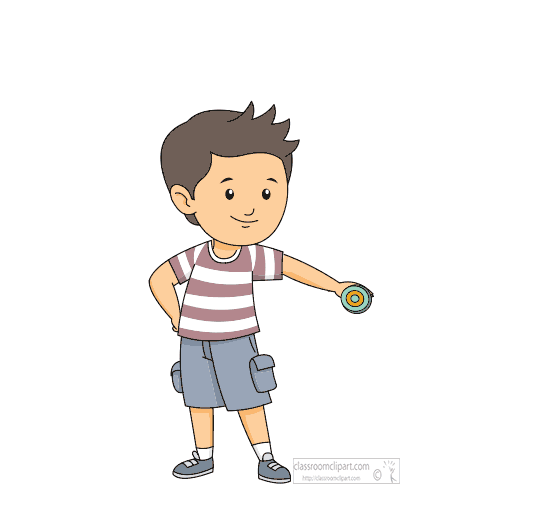

Se você quer aprender truques de yo-yo de uma maneira rapida e pratica, talvez use algo mais profissional, mas se voce so quiser o basico do basico voce esta meio que no lugar certo
Metodo de lançamento do Yo-Yo:
Flexione seu braço com a palma que esta segurando o yo-yo virada para cima.
Desflexione seu braço e abra a mão para que o yo-yo seja lançado e quando
o yo-yo chegar no fim da corda vire sua palma para baixo.Para que
o yo-yo volte até a sua mão, basta dar umleve puxão com o dedo
que esta segurando a corda
